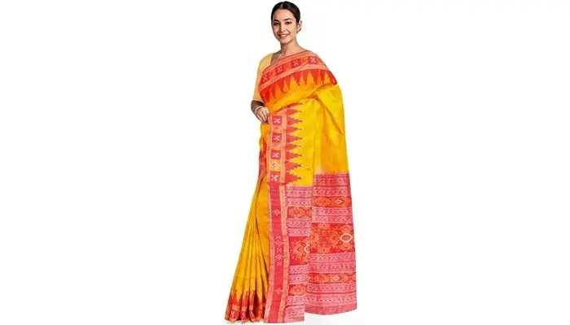

Khandua Saree
These sarees have a distinct metallic accent with curvy edges. Khandua gives the wearer a sense of courage and bravery. They are composed of Malda or soft silk with a highly detailed design. Women in Odisha wear this saree during special occasions like festivals and weddings. Borders of the saree are embedded with simple ikat work. In contrast, the pallav consists of intricate ikat work. These sarees are designed in patterns of orange, red and yellow. Moreover, the pallav and borders are generally crimson, blue and black, which elevates the overall look.